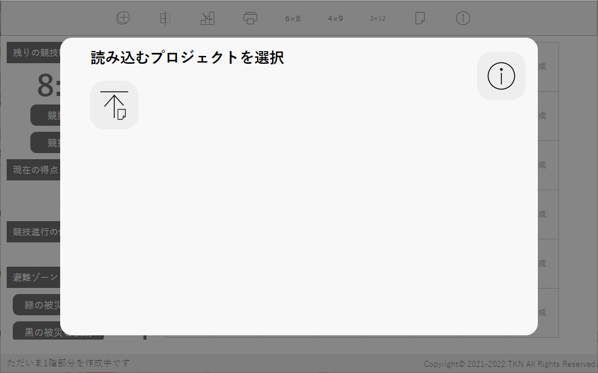

お願い
お願いこのソフトウェアはロボカップジュニアジャパンレスキューラインのコースを作成できるものです。ルールは2022年版に準拠します。なお、レスキューキット・被災者・避難場所等、得点走行毎に場所が異なるものを配置する機能はありません。
アプリケーション版の配布はv1.1.1をもって終了しました。なおv1.1.1以前でもアプリケーション版を利用すると思わぬ不具合が発生する場合がありますので、ブラウザ版(このソフトウェア)をご利用ください。
Githubでソースコードを公開しています(外部リンク)お願いスマートフォン、iPadではブラウザのタブを非表示にしてお使いください。操作に支障をきたすおそれがあります。
また、スマートフォンは画面が小さいため横向きでのご利用を推奨いたします。
ロボカップジュニアジャパンレスキューラインのコートを作成します。
3.NRL得点計算作成したNRLのコートを用いて競技の得点を計算します。
4.ファイル変換古いバージョンのコート作成で保存したプロジェクトファイルを最新版で読み込めるよう変換します。
5.動作環境全機能共通の動作環境について。
6.変更履歴このソフトウェアの変更履歴について。
7.旧ソフトウェアの変更履歴旧ソフトウェア(RoboCupJunior NRL コート作成環境、RoboCupJunior WRL コート作成環境)の変更履歴について。
8.このソフトウェアについて起動するとこのような画面が出ます。いずれかを選んでコートを作成します。

 新規作成
新規作成コートを新規作成します。下の「リーグを選択」でNRLかWRLを選んでください。コート作成画面でリーグを変更することはできません。
 プロジェクトの読み込み
プロジェクトの読み込み作成途中のプロジェクトを読み込み、途中から編集作業を再開できます。クリックするとファイル選択画面が出るので、任意のファイルを選んでください。読み込むことができるファイルの拡張子は.rrlのみ(Safariでは.csvも可、ただしこのソフトウェアで作成されたもののみ)です。
※保存と読み込みは基本的に同じバージョンで行ってください。違うバージョンで行った場合正常に読み込まれないことがあります。メジャーアップデートでRRLファイルの内部構造が変わった場合、新しいバージョンでは古いバージョンのファイルをサポートし、新しいバージョンのファイルに変更できるようにします。その場合は下の表に△で表されます。古いバージョンで作られたファイルのサポートは、次のメジャーアップデートで打ち切ります。サポート打ち切り後はファイル変換をご利用ください。
| 作成 | |||||
| v1.0.0~v1.1.3 | v2.0.0~v2.0.2 | v3.0.0~v3.1.1 | v4.0.0~v4.4.0 | ||
| 読み込み | v1.0.0~ v1.1.3 | ○ | - | - | - |
| v2.0.0~ v2.0.2 | △ | ○ | - | - | |
| v3.0.0~ v3.1.1 | × | △ | ○ | - | |
| v4.0.0~ v4.4.0 | × | × | △ | ○ | |
○…読み込み可能 △…読み込み可能だが非推奨 ×…ファイル変換が必要 -…不可能
後述の自動保存したデータを読み込みます。
 ヘルプボタン
ヘルプボタンヘルプ(このページ)を表示します。

コート作成のためのツールを実行するボタンやヘルプがあります。
コートに配置するタイルを選ぶことができます。この部分をスクロールすると「特殊タイル」や「タイル情報」があります。
作ったコートを表示します。
コート作成に役立つガイドを表示します。
まず③で配置したいタイルをクリックします。次に「タイル情報」の任意の階のボタンをクリックします(1回「タイル情報」のボタンを押すとその設定は次に階を変えるまでタイルを変えても保持されます)。さらに③でそのタイルを配置したい場所をクリックします。するとそこにタイルが配置できます。ダブルクリックで向きを時計回りに90度変えることができます。
③の一番左上にある被災者ゾーンのタイルは4か所にしか置けません。置ける場所は一番左上、その4つ下、一番上の列の左から5番目、その4つ下です。置くと被災者ゾーンが自動入力されます。任意の場所に入り口をつけてください。この機能は6×8タイルの1階部分にのみ対応しています。
ブラウザの予期せぬクラッシュなどに備えるため、作ったタイルは自動保存されます。保存されるのはタイルのみで、得点要素などは保存されません。すべてを保存するには「プロジェクトの保存」をしてください。コートを変更するごとに自動保存は上書きされ、それ以前の記録は消されます。

③のタイルのどこかを右クリック(タッチデバイスでは長押し)すると右クリックメニューが表示されます。「このタイルの情報を削除」を押すと、そのタイルにある全ての情報が削除されます。未作成のタイルでは、下の3つの機能は停止されます。
「チェックマーカーを置く」を押すとクリックしたタイルの右上にチェックマーカーが置かれます。ラインとかぶることがあります。「チェックマーカーを取る」で削除できます。
「障害物を置く」を押すとクリックしたタイルの中央に障害物が置かれます。「障害物を取る」で削除できます。

「バンプを置く」を押すと、上のような設定画面が出ます。まずバンプの個数を選びます。すると個数に合わせた入力欄が表示されるので、左側のスペース、上側のスペース、バンプの回転角度を半角数字で入力します。左側と上側のスペースは0~74で、37を指定すると中央に来ます。回転は-90~90で、0度を指定すると縦向きになり、数字が大きいほど右側に傾きます。下側のプレビューに現在の状態が反映されます。「決定」ボタンを押すと、クリックしたタイルにプレビューの通りにバンプが置かれます。右クリックメニューの「バンプを取る」を押すとすべて削除されます。
得点要素があるタイルにはチェックマーカーは配置できないため、1つのタイルにはチェックマーカー・障害物・バンプのうちどれか1つしか配置できません。またシーソータイルは、得点要素のない直線のラインであるため、チェックマーカー・障害物・バンプは配置できません。
 スタート画面へ戻るボタン
スタート画面へ戻るボタンスタート画面に戻ることができます。スタート画面に戻ったら「再開」ボタンが追加されているので、それを押すと元に戻ることができます。
 1階部分の作成/2階・半2階部分の作成ボタン
1階部分の作成/2階・半2階部分の作成ボタン1階部分の作成と2階・半2階部分の作成を切り替えることができます。いまどちらを作成しているかはガイドに表示されています。
 グリッドの表示/非表示ボタン
グリッドの表示/非表示ボタンコートのグリッドの表示・非表示を切り替えることができます。デフォルトではグリッドが表示されています。
 プロジェクトの保存ボタン
プロジェクトの保存ボタン作成途中のコートを保存できます。保存したファイルはまたこのシミュレーターで読み込めます。RRL形式(Safariはcsv形式)のファイルが、Windowsでは通常「ダウンロード」フォルダ(macOSでも同様、iOS・iPadOSはiCloudの「ダウンロード」フォルダ)に保存されます。クリックするとファイル名を入力するダイアログが出るので、入力してください。このとき拡張子の入力は不要です。
 印刷ボタン
印刷ボタン作成したコートのみを印刷できます。
Microsoft Edgeで印刷する際は、「その他の設定」の「オプション」にある「背景のグラフィックス」をオンにしてください。
Google Chromeで印刷する際は、「詳細設定」の「オプション」にある「背景のグラフィック」をオンにしてください。
Firefoxで印刷する際は、「ページ設定」の「オプション」にある「背景色と背景画像も印刷」をオンにしてください。
作成したコートのすべての情報を削除します。この操作は取り消せません。
 6×8タイルボタン、4×9タイルボタン、3×12タイルボタン
6×8タイルボタン、4×9タイルボタン、3×12タイルボタンコートの大きさを変更します。間違って変更してしまっても、入力していたコートの大きさに戻せば「オールクリアボタン」を押していない限り元に戻ります。なお4×9タイル、3×12タイルは被災者ゾーンの自動入力には対応していません。
ヘルプボタンヘルプ(このページ)を表示します。
起動するとこのような画面が出ます。アイコンをクリックしてプロジェクトを読み込みます。
プロジェクトの読み込みクリックするとファイル選択画面が出るので、任意のファイルを選んでください。読み込むことができるファイルの拡張子は.rrlのみ(Safariでは.csvも可、ただしこのソフトウェアで作成されたもののみ)です。RRLファイルの互換性はコート作成と同一です。WRLのコートには対応していません。
ヘルプボタンヘルプ(このページ)を表示します。
得点計算のためのツールを実行するボタンやヘルプがあります。
競技の状況や、避難ゾーンの得点ボタンがあります。
現在のコートの状況を表示します。
得点計算に役立つガイドを表示します。
競技中の画面の一例。
「競技開始」を押すとタイマーがスタートし、無条件に5点加算されます。「競技終了」を押すとタイマーがストップします。もし競技が続行しているのに8分が経過した場合、競技を終了するようアラートが出ます。
オレンジ色に光っているものはハザードです。クリックすると詳細が表示され、「クリア」を押すと得点が加算されます。すでにクリアしている場合、ハザードは灰色に光ります。クリックすると「取り消し」ボタンが表示され、取り消すことができます。
1タイルに2つギャップがある場合、タイルをクリックすると2つ分の詳細が表示されます。先にロボットが通るほうが1つ目と考えて「クリア」を押してください。2つクリアした後は「取り消し」ボタンが1個のみ表示され、クリックすると2つ分が取り消されます。
傾斜路は1タイルごとに認識します。ただし連続している傾斜路は2タイルで10点と定められているので、その場合はどちらかのタイルでのみ「クリア」ボタンを押してください。
競技中、ロボットが通過した灰色のタイルをクリックすると青色に変化します。これは「通過済み」を表します。チェックマーカーがあるタイルをクリックすると、それまでの通過済みタイル数と競技進行の停止数(右クリックメニューで解説)から得られる点数を加算し、通過したタイルは白色になります。白色になったタイルのギャップ・傾斜路は、得点の変更ができなくなります。障害物、バンプは取り消し可能です。
ロボットが2回通過する十字路・十字ギャップは、2回とも同じ区間(スタートタイル・チェックマーカー～チェックマーカーの間)内であれば2回目の通過で青色が濃くなります。間違って2回押してしまった場合、もう1回押すと1回通過と同じ扱いになります。違う区間内で1回ずつ通過する場合は、1個目のチェックポイント通過では色が青色のまま据え置かれ、2回目の通過で青色が濃くなり、2個目のチェックポイント通過で白色になります。
②の「避難ゾーン」の部分にあるボタンを押せば、得点が加算されます。
③の灰色のタイルのどこかを右クリック(タッチデバイスでは長押し)すると右クリックメニューが表示されます。
このソフトウェア上でもチェックマーカーを追加できます。「チェックマーカーを置く」を押すとクリックしたタイルの右上にチェックマーカーが置かれます。ラインとかぶることがあります。「チェックマーカーを取る」で削除できます。
通過の取り消し
誤ってロボットが通過していないタイルをクリックしてしまった場合、これで元に戻すことができます。通過タイルをきちんと記録しないと得点が不正確になりますので、競技通りに記録してください。
「競技進行の停止」を押すと競技進行の停止を記録でき、タイルが赤色になります。もう一度挑戦して通過できたときには、クリックして青色に戻してください。通過タイルと同様きちんと記録しないと得点が不正確になります。現在の区間(スタートタイル・チェックマーカー～チェックマーカーの間)での競技進行の停止数の合計は②に表示されます。
「競技進行の停止を1回取り消し」を押すとそのタイルでの競技進行の停止を1回取り消すことができます。
「競技進行の停止数」には、そのタイルでの競技進行の停止数が表示されます。
スタート画面へ戻るボタンスタート画面に戻ることができます。スタート画面に戻ったら「再開」ボタンが追加されているので、それを押すと元に戻ることができます。
グリッドの表示/非表示ボタンコートのグリッドの表示・非表示を切り替えることができます。デフォルトではグリッドが表示されています。
 競技の詳細ボタン
競技の詳細ボタン現在行っている競技の詳細情報を閲覧することができます。
印刷ボタン競技時間、得点、コートの状況を印刷できます。
Microsoft Edgeで印刷する際は、「その他の設定」の「オプション」にある「背景のグラフィックス」をオンにしてください。
Google Chromeで印刷する際は、「詳細設定」の「オプション」にある「背景のグラフィック」をオンにしてください。
Firefoxで印刷する際は、「ページ設定」の「オプション」にある「背景色と背景画像も印刷」をオンにしてください。
日本リーグレスキューの2022ルールに基づき、各要素ごとの得点を掲載しています。詳細な規定はルールをご覧ください。
6×8タイルボタン、4×9タイルボタン、3×12タイルボタンコートの大きさを変更します。間違って変更してしまっても、入力していたコートの大きさに戻せば「オールクリアボタン」を押していない限り元に戻ります。
ヘルプボタンヘルプ(このページ)を表示します。

ツールやヘルプがあります。
②をクリックすると、ファイル選択画面が出ます。RRL形式のファイル(Safariでは.csvも可、ただしこのソフトウェアで作成されたもののみ)を開いてください。開くと自動で変換が始まります。②の下部にファイルの情報と現在の状態が表示されます。矢印がすべて黒くなったら、変換されたファイルが、Windowsでは通常「ダウンロード」フォルダ(macOSでも同様、iOS・iPadOSはiCloudの「ダウンロード」フォルダ)に保存されます。
書き出したバージョンと読み込むバージョンで、メジャーバージョンが同じなら変換しなくても利用できますが、同じメジャーバージョン内で最新のものにする機能もついています。
もう1度変換ボタン②にあるファイルをもう1度変換できます。
ヘルプボタンヘルプ(このページ)を表示します。
Windows10 Home 21H2(Microsoft Edge v100.0.1185.39,Google Chrome v100.0.4896.88)
Windows10(Microsoft Edge,Google Chrome,FireFox,Opera各最新版)
Windows11(Microsoft Edge,Google Chrome,FireFox,Opera各最新版)
Mac OS(Microsoft Edge,Google Chrome,FireFox,Opera,Safari各最新版)
Linux OS(Microsoft Edge,Google Chrome,FireFox,Opera,Safari各最新版)
Chrome OS(Google Chrome,FireFox,Opera各最新版)
AndroidOS
iOS
iPadOS
Windows10(旧Microsoft Edge,Internet Explorer,旧Opera)
その他PC向け旧OS
重大な不具合・このバージョンでは、コート作成機能において、2階部分を含むWRLコートのプロジェクトを保存した際に2階部分がうまく保存されない不具合が発生しています。この不具合はv4.4.0で修正されました。
重大な不具合・このバージョンでは、コート作成機能において、2階部分を含むWRLコートのプロジェクトを保存した際に2階部分がうまく保存されない不具合が発生しています。この不具合はv4.4.0で修正されました。
2020年1月22日までは、同じくロボカップジュニアレスキューラインのコートを作成するソフトウェアとして「RoboCupJunior NRL コート作成環境」と「RoboCupJunior WRL コート作成環境」(ヘルプでは2つ合わせて「旧ソフトウェア」と表記)を開発していました。しかし、アップデートを重ね機能がほぼ同じになってきたこと、またWRL向けのソフトウェアでNRLのコートも作成可能であることから、WRL版にNRL版を組み込む形で新たにこの「RoboCupJunior コート作成環境」を作成することとしました。2022年1月29日に公開したRC3版で動作が安定したことからそれをv1.0.0とし、UIの改善と機能追加を重ねています。
セマンティック・バージョニングを参考にしており、vX.Y.Zのようにつけます。Xはメジャーバージョンで、RRLファイルの内部構造の変更など後方互換性がなくなる変更があった場合に数字を1つ上げます。Yはマイナーバージョンで、機能性を追加した場合に数字を1つ上げます。Zはパッチバージョンで、バグ修正など細かい変更の際に数字を1つ上げます。詳しくは下記URLをご覧ください(ただしAPIをインターネットに公開しているわけではありませんし、旧ソフトウェアは必ずしもこれに従っているわけではありません)。
セマンティック バージョニング 2.0.0(https://semver.org/lang/ja/)リロードせずに長時間使い続けると、動作が重くなったり不具合が出ることがあります。再読み込みするか、「Ctrl+F5」を押してスーパーリロードしてください。ただし、プロジェクトを保存するのを忘れないでください。なお、再読み込みを行っても自動保存データは保持されます。
無断での転載、商用利用は禁止します。
Copyright© 2021-2022 TKN All Rights Reserved.
このソフトウェアの開発に力を貸してくださっている ゆき 氏に感謝申し上げます。